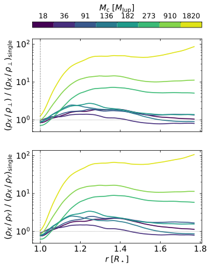

伴星の重力を計算に組み込む
ただ、観測される星周物質の形は、必ずしもきれいな球にはならない。渦巻きや弧、円盤のような構造が見つかることがある。その原因の一つとして考えられるのが、主星の近くを回る伴星の重力だ。では、伴星は星そのものの脈動まで変えてしまうのだろうか。それとも、脈動で動き始めたガスの分布に主として影響するのだろうか。
Tomassiniらは、AGB星の対流と脈動を三次元で計算する「CO5BOLD」を使って、この問題に取り組んだ。主星の重力場に、伴星の重力と連星の回転に対応する遠心力の効果を加え、伴星の質量を変えながら大気の動きを比べた。星の中と周囲で起きる複雑な振動を整理するため、特異値分解という数学的手法も使っている。
脈動と大気の密度に現れた違い
結果には、印象的な対照が現れた。今回調べた条件では、脈動の代表的な周期や振幅、振動のまとまり具合は、伴星の質量を変えても大きくは変化しなかった。一方、大気の密度分布には明瞭な違いが生じた。伴星が存在する方向を結ぶ軸に沿ってガスが濃くなり、その偏りは伴星が重くなるほど強まる。最も大きな効果を示すモデルでは、軸方向とそれに直交する方向で、外側の大気の一定範囲で平均した密度がおよそ５倍異なった。


図を選ぶと原寸画像を開けます。
この違いは、星周物質の形を考えるうえで重要だ。星の内部で生まれる周期的な運動と、外側のガスがどちらに多く集まるかは、異なる物理過程に支配されている可能性がある。星の明るさの変動に大きな違いが見られなくても、大気の密度構造には伴星の影響が現れ得るのである。
もちろん、今回の計算には範囲がある。伴星は計算領域の外に置かれた点質量で、軌道は定常的な円運動として扱われた。コリオリ力は含まれておらず、ガスが伴星の周囲を回り込みながら遠くまで流れる様子は、今後の計算に委ねられる。また、今回のモデルはガスを扱う段階で、塵の形成と塵によって駆動される風を組み込んだ計算は次の課題だ。
それでも、質量放出の始まる領域に連星の重力がどのような偏りを刻むかを、星の脈動と切り分けて示した意義は大きい。星のごく近くに分布する分子ガスやSiOメーザーを観測するときにも、何が密度の形を決め、何がガスの周期的な運動を決めるのかという問いにつながる。